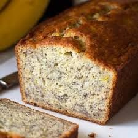

Favorite Foods
Banana Bread is my most favorate bread that's out there.
My mother makes banana bread on specal events like Christmas and Thanksgiving.

Lasagna is my most favorite dinner item.

Cookies are my favorite snaking item other than candy, maybe because I have a really bad sweettooth.